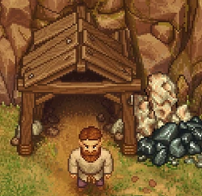

Zombie ore mine
| Zombie ore mine | |
|---|---|
 | |
Basic information
| |
Required Technology :
|
Zombie mining |
Related pages :
|
Mining |
Rotatable :
|
no |
Location(s)
| |
| Cabin in the woods, Quarry | |

The zombie ore mine can be built after unlocking zombie mining. It is located in the quarry region north east of the cabin in the woods.
Build
Before you can use the mine, you first have to build it. The site looks abandoned like this:
Note: It is not possible to mine
iron ore or
coal manually here. You need  zombies to exploit the mine. After building two mines (left and right variant are possible), and assigning workers to it (stand in front of the bench and hit "E"), the site looks like this:
zombies to exploit the mine. After building two mines (left and right variant are possible), and assigning workers to it (stand in front of the bench and hit "E"), the site looks like this:

Note, that the empty benches and the illuminated mineshaft indicate, that the mines are working. You also see the moving progress bar below the products, the zombies are currently mining. Each miner seperately alternate between mining coal and iron.
The products are stored in the iron ore stockpile or the trunk respectively near the cabin in the woods. Without those facilities the mines wont't work. This sign  on a product means, that the stockpile is full (or missing) and the work is blocked until some storage space is freed up (or built).
on a product means, that the stockpile is full (or missing) and the work is blocked until some storage space is freed up (or built).
If you want to stop the mine completely, just take out the miner again, by standing in front of the bench and hitting "E". The  zombie gets off its work and can be transported elsewhere. An inactive mine looks like this:
zombie gets off its work and can be transported elsewhere. An inactive mine looks like this:

Note, that the zombies dropped their pickaxes and helmets onto the benches and the mineshaft is no longer illuminated. The progress bars below the mined products stopped in midwork.
Cost
| Icon | Materials Required | Energy | Notes |
|---|---|---|---|

|
8× Flitch 4× Nails 1× Pickaxe I |
This blueprint is available in two variations: left and right |
| ||||||||